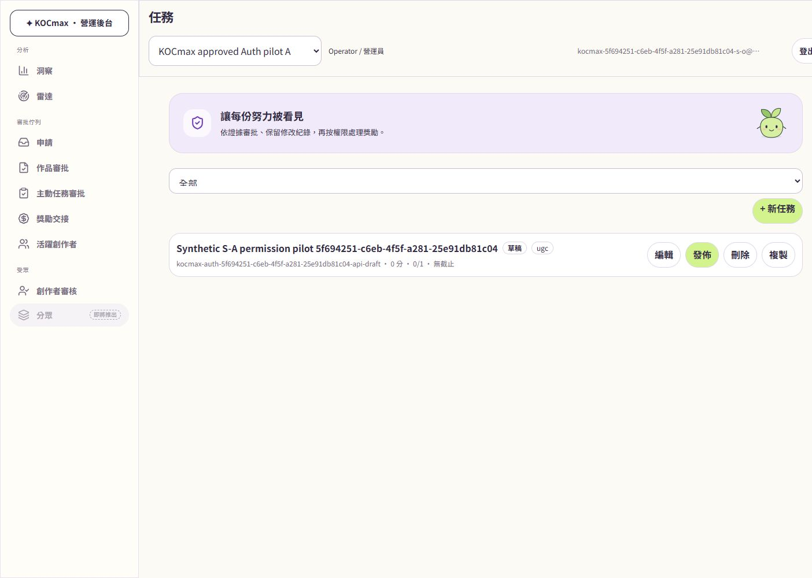
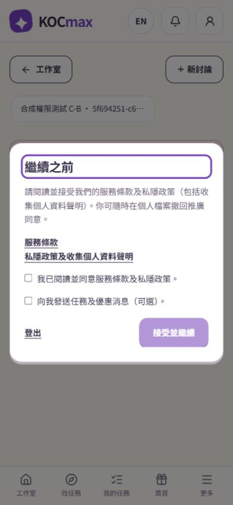

S-O · desktop
mission-read-and-controls
1440 × 1000 · 2026-11-01T16:23:18.069Z核對內容
{
"ownedDraftReadable": true,
"managementNavigationHidden": true,
"writeControlsStillVisible": true,
"classification": "UI_PERMISSION_AFFORDANCE_FINDING_SERVER_WRITE_GUARD_VERIFIED_BY_API"
}
C-B · mobile
cross-workspace-private-denied-confirmed
390 × 844 · 2026-11-01T17:01:58.949Z核對內容
{
"ownHistoryVisible": false,
"foreignPrivateTitleAbsent": true,
"errorStatePresent": false,
"assertionSource": "FRESH_ACCESSIBILITY_STATE"
}